Цели работы:
1. Изучить базовые принципы построения компьютерных сетей малых и средних организаций и предприятий
2. Осуществить расчет сети предприятия согласно варианту
3. Провести анализ необходимого оборудования с учетом масштабируемости
4. Осуществить создание макета компьютерной сети в САПР «Packet Tracer»
5. Сделать вывод о созданной компьютерной сети
Компьютерная (вычислительная) сеть или сеть передачи данных представляет собой некоторую совокупность узлов (компьютеров, рабочих станций или других устройств), соединенных коммуникационными каналами, а также набор оборудования, обеспечивающего соединение станций и передачу между ними информации.
Сегодня существует огромное многообразие компьютерных сетей самых разных назначений, построенных на основе различных компьютерных и коммуникационных технологий и определяемых использованием той или иной сетевой архитектуры.
Сетевая архитектура – это совокупность сетевых аппаратных и программных решений, методов доступа и протоколов обмена информацией.
Многообразие компьютерных сетей можно классифицировать по ряду признаков:
1. По технологии передачи данных сети делятся на два типа: вещание (или один — ко многим) и соединение точка — точка. В случае вещания сообщение, отправленное одним компьютером, получают все компьютеры сети. Соединение точка — точка подразумевает использование индивидуального канала связи для обменивающихся информацией компьютеров.
2. По принципу организации обмена данными между абонентами различают сети, основанные на коммутации:
• каналов;
• сообщений;
• пакетов.
3. По территориальной распространенности сети могут быть: локальные, кампусные, городские, глобальные.
Локальная сеть или локальная вычислительная сеть (Local Area Network —LAN) — это сеть ЭВМ, включающая в себя компьютеры, расположенные в пределах одного помещения, здания или небольшой территории, позволяющая обмениваться данными и совместно использовать различные устройства (принтеры, сканеры и т. п.).
Кампусная сеть — (от англ. campus — университет, территория университета) сеть, охватывающая территорию университета или студенческого городка. В Беларуси аналогом кампусной сети можно рассматривать домовую сеть, объединяющую несколько соседних домов.
Городская сеть (Metropolitan Area Network — MAN) объединяет компьютеры на территории городского района или всего города целиком.
Глобальная сеть (Wide Area Network — WAN) — совокупность сетей, объединяющих территориально рассредоточенные компьютеры, находящиеся в различных городах и странах.
4. Кроме того, сети могут различаться по топологии. Топология сети может быть полносвязная, ячеистая, кольцевая, звезда, дерево, общая шина и смешанная.
5. По скорости передачи данных сети делятся на:
• низкоскоростные (до 10 Мбит/с);
• среднескоростные (до 100 Мбит/с);
• высокоскоростные (свыше 100 Мбит/с).
6. По типу среды передачи данных сети разделяются на проводные (коаксиальные, на витой паре, оптоволоконные) и беспроводные (радиопередача, спутниковые каналы).
7. По принципу организации иерархии компьютеров сети бывают одноранговые и с выделенным сервером.
Сервер (от англ. server – служащий, служитель) – это некий объект, предоставляющий другим объектам, обычно называемым клиентами, некоторые услуги.
В компьютерных сетях сервером обычно называют компьютер или программу, которая предоставляет клиентам доступ по сети к своим службам и ресурсам с целью обмена информацией. Компьютер или программа, обменивающиеся с сервером информацией и использующие предоставляемые им службы и ресурсы, называются клиентом.
В одноранговых сетях все компьютеры имеют одинаковые, равные права (ранги). В сетях с выделенным сервером различают две архитектуры использования сервера:
• файл-сервер – данные и программы по требованию пользователя пересылаются с сервера ему на компьютер, являющийся клиентом, где могут быть выполнены и обработаны;
• клиент-сервер – выполнение программ и обработка данных происходят на сервере по запросу пользователя, ты запроса.
Сетевые модели и стеки протоколов
При взаимодействии по сети производится множество операций, обеспечивающих передачу данных с одной рабочей станции на другую. При этом передаваемые данные проходят множество этапов обработки.
Сначала данные разбиваются на отдельные блоки, из которых формируются пакеты данных, снабженные метками, и идентификаторы для того, чтобы потом данные можно было снова «собрать» воедино такими, какими они были до разбиения. Полученные пакеты кодируются и передаются по сети в виде электрических или световых сигналов.
На стороне принимающей рабочей станции данные проходят обработку в обратном порядке: принимаются, декодируются, собираются из блоков, принимая первоначальный вид.
Действия по подготовке информации для передачи, передача, прием и обработка информации после приема осуществляются частично программными средствами, частично аппаратными.
Но при передаче сообщений оба участника сетевого обмена должны принять множество соглашений. Они должны согласовать уровни и форму передаваемых сигналов, способ определения длины сообщений, определить методы контроля достоверности получаемой информации и многое другое.
Для упорядочивания и обеспечения возможности стандартизировать все выполняемые при взаимодействии по сети процедуры используют архитектурный подход, согласно которому сетевые системы описываются с помощью сетевых моделей.
Сетевая модель устанавливает соглашения о том, как передавать и принимать данные для всех этапов взаимодействия по сети, начиная от передачи битов, до определения того, как информация должна быть интерпретирована.
В начале 80-х годов международной организацией по стандартизации (ISO) на основе сетевой архитектуры SNA (System Network Architecture) компании IBM была разработана модель взаимодействия открытых систем (Open System Interconnection — OSI).
Модель OSI, очень часто называемая эталонной моделью взаимодействия открытых систем, разбивает все процессы взаимодействия и передачи данных по сети на семь уровней. Этой же моделью для каждого уровня определяются выполняемые ими функции, даются термины и определения основных понятий.
Вышестоящие уровни сетевой модели выполняют более сложные, глобальные задачи, для этого используют в своих целях нижестоящие уровни, а также управляют ими. Задача нижестоящего уровня — предоставление услуг вышестоящему уровню, обеспечивающих возможность выполнения его задач, причем вышестоящему уровню не важно, каким образом эти услуги реализуются. Нижестоящие уровни выполняют более простые и конкретные функции. В идеале каждый уровень взаимодействует только с теми, которые находятся рядом с ним (выше и ниже него). Верхний уровень соответствует прикладной задаче, работающему в данный момент приложению, нижний — непосредственной передаче сигналов по каналу связи (таблица 1).
Задачи и функции по уровням модели OSI
Физический уровень (Physical Layer) определяет физические, механические и электрические характеристики линий связи, к которым относятся:
• тип кабелей и разъемов;
• разводка контактов в разъемах;
• схемы бинарного кодирования сигналов.
На этом уровне осуществляется прием и передача данных по линиям связи. Данные, поступающие с канального уровня, кодируются в электрические или световые сигналы, после этого передаются. При приеме полученные с лини связи данные декодируются и передаются на дальнейшую обработку на канальный уровень. Со стороны компьютера функции физического уровня в локальных сетях обычно выполняются сетевым адаптером, а в глобальных — модемом.
Канальный уровень (Data Link Layer) определяет формирование пакетов соответствующего используемой сети вида. Канальный уровень обычно разделяют на два подуровня:
• управление логической связью (Logical Link Control — LLC);
• доступ к среде передачи данных (Media Access Control — MAC).
Верхний подуровень управления логической связью осуществляет установку и поддержку виртуального канала связи, а также обеспечивает взаимодействие с сетевым уровнем.
Нижний подуровень доступа к среде передачи данных обеспечивает непосредственный доступ к каналу связи и связан с аппаратурой сети. Помимо контроля над состоянием сети, повторной передачи кадров при их утере, приема кадров и проверки правильности передачи, в функции этого уровня входит взаимодействие с физическим уровнем.
Сетевой уровень (Network Layer) обеспечивает адресацию пересылаемых пакетов.
Также здесь решаются задачи управления потоками данных в сети и маршрутизации, т. е. выбора маршрута передачи данных по узлам сети.
Транспортный уровень (Transport Layer) является своего рода связующим звеном между более высокими уровнями, сильно зависящими от приложений, и нижними уровнями, более привязанными к линиям связи. На транспортном уровне происходит разбиение передаваемой информации на пакеты и сборка принимаемых данных из пакетов.
Здесь же обеспечивается контроль над передачей данных. На транспортном уровне реализованы возможности обнаружения и исправления ошибок передачи данных, вызванными искажениями, потерями или дублированием пакетов. Кроме того, на этом уровне происходит согласование сетевых уровней различных несовместимых сетей.
Сеансовый уровень (Session Layer) обеспечивает координацию связи между двумя рабочими станциями сети. Уровень организует сеанс обмена данными, управляет приемом и передачей пакетов, обеспечивает завершение сеанса. Кроме того, осуществляется контроль над степенью завершения длинных передач, что позволяет избежать повторной пересылки данных при разрывах связи и возобновить передачу с прерванного места.
Уровень представления (Presentation Layer) имеет дело с внешним представлением данных и обеспечивает преемственность передаваемой информации с одной системы для другой системы. С его помощью преодолеваются различия, например, между всевозможными кодировками символов или синтаксиса.
Средства уровня представления позволяют выполнять различные виды преобразования данных: шифрование, дешифрование, сжатие.
Прикладной уровень (Application Layer) реализует взаимодействие прикладных программ пользователя с процессами модели OSI, обеспечивая им набор определенных сетевых услуг, таких, как передача файлов, обмен почтовыми сообщениями, управление сетью и т. д.
Протоколы, используемые для обмена данными в локальных сетях, делятся по своей функциональности на три типа:
• прикладные;
• транспортные;
• сетевые.
Прикладные протоколы выполняют функции трех верхних уровней модели OSI — прикладного, уровня представления и сеансового. Они обеспечивают взаимодействие приложений и обмен данными между ними. К наиболее популярным прикладным протоколам относятся:
• FTAM (File Transfer Access and Management) - протокол OSI доступа к файлам;
• Х.400 - протокол OSI для международного обмена электронной почтой;
• Х.500 - протокол OSI служб файлов и каталогов на нескольких системах;
• SMTP (Simple Mail Transfer Protocol) - протокол Интернета для обмена электронной почтой;
• FTP (File Transfer Protocol) - протокол Интернета для передачи файлов;
• SNMP (Simple Network Management Protocol) - протокол для мониторинга сети, контроля за работой сетевых компонентов и управления ими;
• Telnet - протокол Интернета для регистрации на удаленных серверах и обработки данных на них;
• SMB (Server Message Blocks) - протокол взаимодействия рабочей станции и сервера фирмы Microsoft;
• NCP (NetWare Core Protocol) - протокол передачи данных между сервером
• NetWare и рабочей станцией фирмы Novell;
• Apple Talk и Apple Share - набор сетевых протоколов фирмы Apple;
• AFP (AppleTalk Filling Protocol) - протокол удаленного доступа к файлам фирмы Apple;
• DAP (Data Access Protocol) - протокол доступа к файлам сетей DECnet.
Транспортные протоколы реализуют функции транспортного и сеансового уровня модели OSI. Они инициализируют и поддерживают сеансы связи между узлами сети и обеспечивают требуемый пользователем уровень надежности передачи данных. Наиболее популярны из них следующие:
• TCP (Transmission Control Protocol) - протокол Интернета для гарантированной доставки данных, разбитых на последовательность фрагментов;
• SPX (Sequential Packet Exchange) - протокол стека IPX/SPX для передачи данных, разбитых на последовательность фрагментов, фирмы Novell;
• NetBIOS (Network Basic Input/Output System) — протокол устанавливает и контролирует сеансы связи между компьютерами;
• ATP (AppleTalk Transaction Protocol), NBP (Name Binding Protocol) - протоколы сеансов связи и транспортировки данных фирмы Apple.
Сетевые протоколы выполняют функции трех нижних уровней модели OSI — сетевого, канального и физического. Эти протоколы управляют адресацией, маршрутизацией, проверкой ошибок и повторной передачей кадров, обеспечивая услуги связи, и определяют правила осуществления связи в отдельных средах передачи данных, например Ethernet или Token Ring. К наиболее популярным сетевым протоколам относятся:
• IP (Internet Protocol) - протокол Интернета для передачи пакетов;
• IPX (Internetwork Packet Exchange) - протокол для передачи и маршрутизации пакетов фирмы Novell;
• NetBEUI - транспортный протокол, обеспечивающий услуги транспортировки данных для сеансов и приложений NetBIOS фирмы Microsoft;
• DDP (Datagram Delivery Protocol) АррІеТаlk - протокол транспортировки данных фирмы Apple.
Кроме особенностей, обусловленных выполняемыми функциями, различия и особенности протоколов характеризуются их ориентацией на работу в различных операционных системах и с различными аппаратными платформами.
Построение компьютерных сетей в ЭСБ
Аппаратные компоненты локальных компьютерных сетей
Любая компьютерная сеть представляет собой довольно сложный комплекс программных и аппаратных средств, осуществляющих связь компьютеров и других устройств между собой.
В основе аппаратной части локальной сети лежат стандартизованные компьютерные платформы различных классов — от персональных компьютеров до мэйнфреймов и суперЭВМ. Использование тех или иных компьютерных платформ, а также прочих аппаратных средств обосновывается набором задач, на решение которых ориентирована создаваемая сеть.
Кроме того, к аппаратной составляющей компьютерной сети относятся кабельные системы линий связи и коммуникационное оборудование, позволяющее объединять отдельные сегменты сети и организовывать информационные потоки.
1. Структурированная кабельная система
Кабельная система является базой для любой сети. Если кабель низкого качества, неграмотно проложен и подключен, то никакое оборудование не заставит работать сеть надежно и устойчиво. Очень часто будут возникать проблемы при расширении кабельной системы, подключении новых сегментов кабеля или других кабельных подсистем.
Существует ряд стандартов и методик по построению кабельной системы, позволяющий обеспечить надлежащую работу сети и более легкое ее обслуживание, ремонт и масштабирование. Построенная таким образом кабельная система называется структурированной.
Структурированная кабельная система (СКС) — это набор коммутационных элементов (кабелей, разъемов, соединителей, специальных шкафов, кронштейнов, кабель-каналов и т. д.), совместное использование которых, закреплено определенной методикой (рисунок 1).
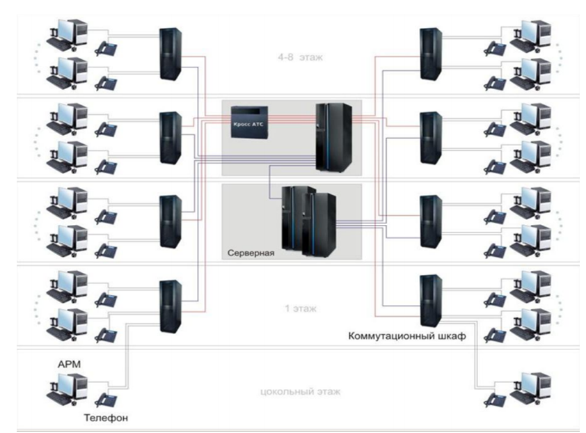
Рисунок 1 – Пример структурированной кабельной сети.
2. Сетевые адаптеры
Сетевой адаптер (Network Interface Card - NIC) — это периферийное устройство компьютера. Именно сетевой адаптер непосредственно взаимодействует со средой передачи данных, которая прямо или через коммуникационное оборудование связывает его с другими компьютерами.
В зависимости от технологии построения сети, с которой работает адаптер, они делятся на Ethernet-адаптеры, Token Ring-адаптеры, FDDI-адаптеры и т. д
Как правило, сетевые адаптеры выполняются в виде отдельной платы, вставляемой в слоты расширения системной шины компьютера. Плата сетевого адаптера обычно имеет также один или несколько внешних разъемов для подключения к ней кабеля сети.
К основным функциям сетевых адаптеров относятся:
• гальваническая развязка компьютера и кабеля локальной сети;
• кодирование и декодирование данных;
• опознавание принимаемых пакетов (передача на компьютер только тех пакетов, которые адресованы данной рабочей станции);
• буферизация передаваемой и принимаемой информации в буферной памяти адаптера;
• организация доступа к сети в соответствии с принятым методом доступа к среде передачи данных.
Для обеспечения взаимодействия компьютера с подключенным к нему сетевым адаптером необходим драйвер, который обеспечивает управление сетевым адаптером, а также позволяет производить его настройку и конфигурирование.
3. Концентраторы
Концентратор или хаб (от англ. hub) – сетевое устройство, предназначенное для объединения нескольких устройств Ethernet в общий сегмент сети. Устройства подключаются при помощи витой пары, коаксиального кабеля или оптоволокна. Термин концентратор (хаб) применим также к другим технологиям передачи данных: USB, FireWire и пр.
К портам концентратора с помощью отдельных сегментов кабеля подключаются узлы сети: компьютеры, сетевые принтеры и накопители, другие концентраторы или прочее коммутационное оборудование.
В последнее время концентраторы используются достаточно редко, вместо них получили распространение коммутаторы — устройства, работающие на канальном уровне модели OSI и повышающие производительность сети путём логического выделения каждого подключённого устройства в отдельный сегмент, домен коллизии.
4. Мосты
При расширении сети, увеличении числа работающих в ней станций возникает проблема перегрузки каналов связи. При достижении некоторого порогового значения числа подключенных к сети компьютеров пропускная способность сети начинает стремительно убывать, а продолжительность задержек перед получением доступа к разделяемой среде — увеличиваться.
Для решения этой проблемы сеть начали разделять на несколько сред передачи данных, объединенных мостами.
Мост (bridge) – специальное устройство, ретранслирующее получаемые из одного сегмента сети пакеты в другой сегмент (рисунок 2). Но в отличие от повторителя или концентратора, мост анализирует адрес назначения пакета. Пакет повторяется в другой сегмент сети только в том случае, если в этом сегменте находится адресат, т. е. сеть разбивается на несколько подсетей, которые разделяют между собой и объемы передаваемой между станциями информации, снижая загруженность на общем канале связи.
5. Коммутаторы
Коммутатор (switch [свич], коммутирующий концентратор) — это многопортовое устройство, которое, так же как и мост, позволяет объединить несколько отдельных сегментов в одну сеть.
Работа коммутатора может быть основана на использовании:
• коммутационной матрицы;
• общей шины;
• разделяемой памяти;
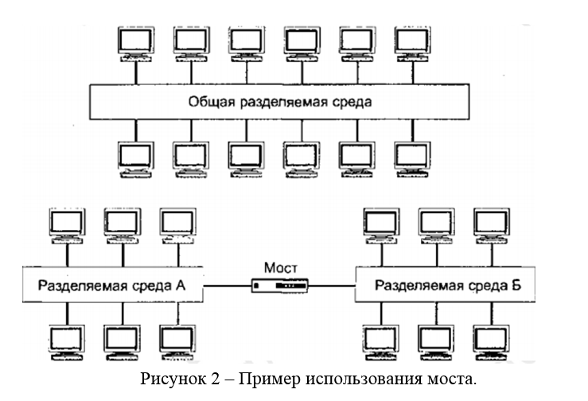
Коммутационная матрица обеспечивает передачу пакетов между портами и работает по принципу коммутации каналов. При получении пакета на какой-либо из портов несколько первых байтов пакета, содержащих адрес назначения, помещаются в буфер коммутатора для анализа. Получив адрес назначения, коммутатор, не дожидаясь получения оставшихся байтов пакета, решает, передавать ли пакет. Если в этом нет необходимости, то запись пакета в буфер прекращается и происходит очистка буфера. Если коммутатор решил передавать пакет, то он просматривает адресную таблицу, чтобы определить, нужный порт-получатель, после этого обращается к коммутационной матрице для установки соединения с этим портом. После установки соединения начинается передача пакета. Если нужный порт занят другим соединением, то полученный пакет записывается в буфер, где ожидает, пока можно будет установить требуемое соединение.
В случае коммутаторов с общей шиной порты связывает высокоскоростная шина, по которой и передаются пакеты. Передача происходит небольшими порциями, чтобы не забивать шину передачами только с одного порта, заставляя остальные порты находиться в очереди на передачу в течение неопределенного времени.
Использование для связи портов коммутатора разделяемой памяти основано на особой организации памяти коммутатора, где образовано несколько очередей данных для каждого из портов. При этом память поочередно соединяется с буферами портов для записи или чтения. Поступающие пакеты записываются в буфер порта, откуда попадают в разделяемую память. Когда память соединиться с буфером порта назначения, тот считывает данные и пересылает их в сеть.
Применение компьютерных сетей в ЭСБ.
Оборудование контроля доступа, видеонаблюдения, охранно-пожарной сигнализации могут подключаться как напрямую к локальной компьютерной сети, без необходимости в дополнительной прокладке кабелей, так и быть выделены в отдельную сеть передачи данных, реализованную на базе принципов построения компьютерных систем передачи данных (рисунок 3). Работа всех устройств по одному протоколу обеспечивает высокую надежность системы безопасности. Организация таких сетей в ЭСБ подобна организации компьютерных сетей. Повсеместно происходит интеграция различных систем в единую сеть передачи данных. Системы охранной сигнализации отправляют по обработке данные на ваш мобильный телефон о несанкционированном доступе, системы пожарной сигнализации вовремя обнаружат возгорание и оповестят о нем, а системы видеонаблюдения интегрированные с системами передачи данных позволяют осуществить удаленное наблюдение за вашим помещением или имуществом.
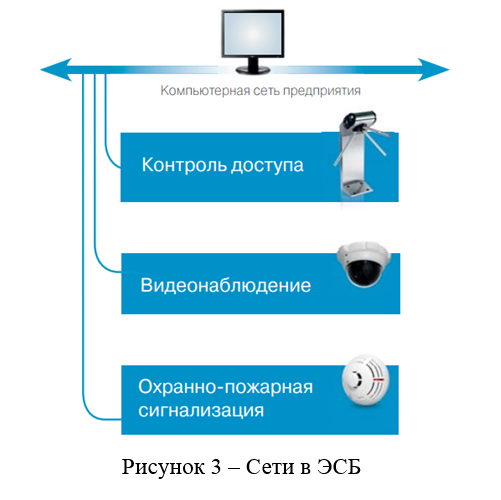
Применение таких систем широко нашло применение в офисных и административных зданиях. Информация от оборудования поступает на Центральный пост охраны предприятия. Охранник может дистанционно открыть двери помещений в случае пожара или, наоборот, установить для них режим «Закрыто» при проникновении посторонних на объект. Если происходит тревожное событие, охранник сразу получает сигнал тревоги и может принять необходимые меры.
Работа с PacketTracer
Для построения простейшей компьютерной сети используется программный продукт Cisco Packet Tracer. Интерфейс программы представлен на рисунке 4.
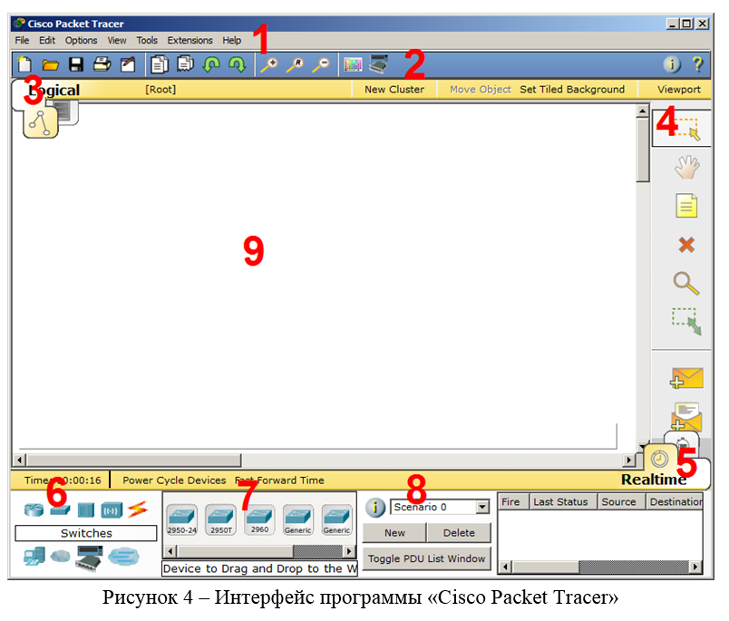
Можно выделить основные части интерфейса:
1. Главное меню программы;
2. Панель инструментов – дублирует некоторые пункты меню;
3. Переключатель между логической и физической организацией;
4. Ещё одна панель инструментов, содержит инструменты выделения, удаления, перемещения, масштабирования объектов, а так же формирование произвольных пакетов;
5. Переключатель между реальным режимом (Real-Time) и режимом симуляции;
6. Панель с группами конечных устройств и линий связи;
7. Сами конечные устройства, здесь содержатся всевозможные коммутаторы, узлы, точки доступа, проводники.
8. Панель создания пользовательских сценариев;
9. Рабочее пространство;
Большую часть данного окна занимает рабочая область, в которой можно размещать различные сетевые устройства, соединять их различными способами и как следствие получать самые разные сетевые топологии.
Сверху, над рабочей областью, расположена главная панель программы и ее меню. Меню позволяет выполнять сохранение, загрузку сетевых топологий, настройку симуляции, а также много других интересных функций. Главная панель содержит на себе наиболее часто используемые функции меню.
Справа от рабочей области, расположена боковая панель, содержащая ряд кнопок отвечающих за перемещение полотна рабочей области, удаление объектов и т.д.
Снизу, под рабочей областью, расположена панель оборудования.
Данная панель содержит в своей левой части типы доступных устройств, а в правой части доступные модели. При выполнении различных лабораторных работ, эту панель придется использовать намного чаще, чем все остальные. Поэтому рассмотрим ее более подробно.
При наведении на каждое из устройств, в прямоугольнике, находящемся в центре между ними будет отображаться его тип. Типы устройств, наиболее часто используемые при работе с Packet Tracer, представлены на рисунке 5.
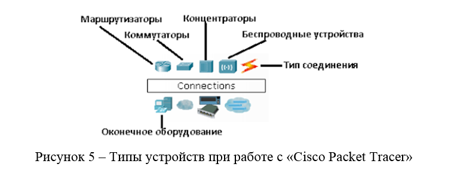
Рассматривать конкретные модели устройств каждого типа, не имеет большого смысла. Отдельного рассмотрения заслуживают типы соединений (рисунок 6).
Перечислим наиболее часто используемые из них (рассмотрение типов подключений идет слева направо согласно рисунка 6):
- Автоматический тип – при данном типе соединения PacketTracer автоматически выбирает наиболее предпочтительные тип соединения для выбранных устройств
- Консоль – консольные соединение
- Медь Прямое – соединение медным кабелем типа витая пара, оба конца кабеля обжаты в одинаковой раскладке. Подойдет для следующих соединений: коммутатор – коммутатор, коммутатор – маршрутизатор, коммутатор – компьютер и др.
- Медь кроссовер – соединение медным кабелем типа витая пара, концы кабеля обжаты как кроссовер. Подойдет для соединения двух компьютеров.
- Оптика – соединение при помощи оптического кабеля, необходимо для соединения устройств имеющих оптические интерфейсы.
- Телефонный кабель – обыкновенный телефонный кабель, может понадобится для подключения телефонных аппаратов.
- Коаксиальный кабель – соединение устройств с помощью коаксиального кабеля.
Пример локальной вычислительной сети
Рассмотрим на примере создание локальной вычислительной сети в Сisco Packet Tracer (рисунок 7)./p>
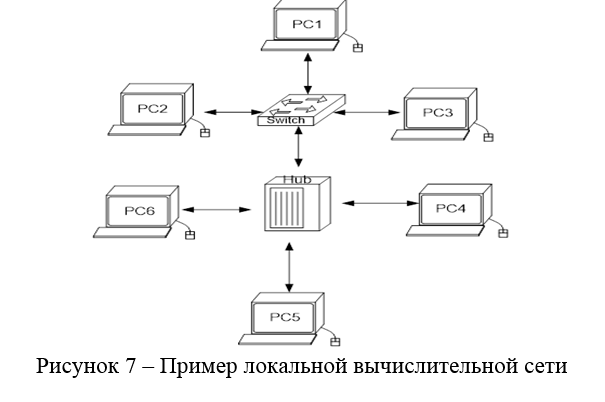
1. В нижнем левом углу Packet Tracer выбираем устройства «Сетевые коммутаторы», и, в списке справа, выбираем коммутатор 2950-24,нажимая на него левой кнопкой мыши, вставляем его в рабочую область (рисунок 8). Так же поступает с «Сетевым концентратором (Hub-PT)» и «Рабочими станциями (PC-PT)».
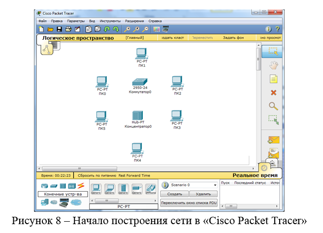
2. Далее, для соединения двух устройств, необходимо выбрать соответствующий вид кабеля и нажать на одно устройство (выбрав произвольный свободный порт FastEthernet) и на другое устройство (также выбрав произвольный свободный порт FastEthernet) (рисунок 9). Выбирается свободный порт на компьютере (рисунок 10). Выбирается свободный порт на коммутаторе (рисунок 11).
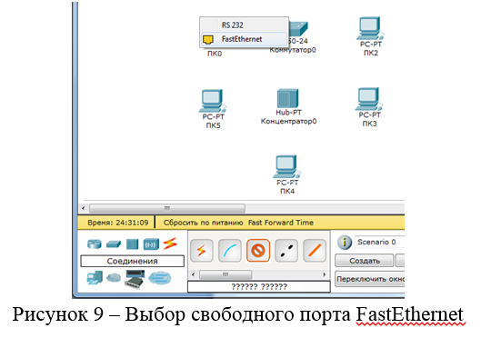
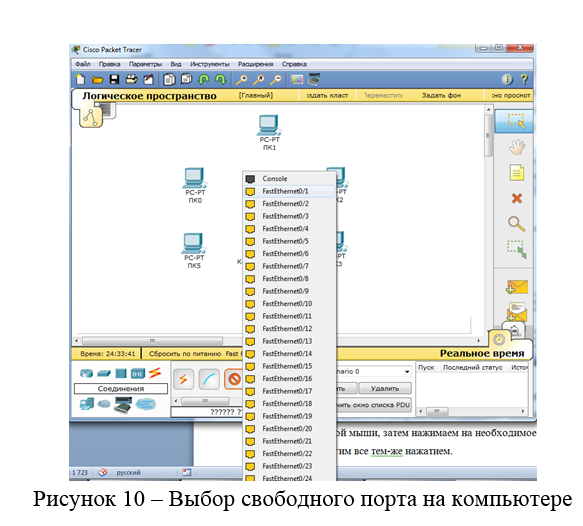
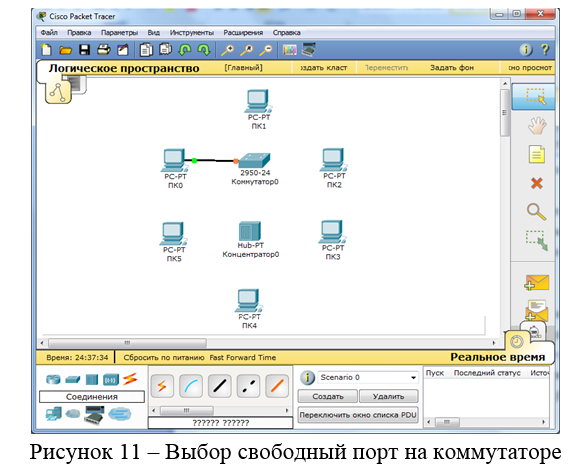
Соединение медным прямым кабелем ПК 0 и коммутатор 0
Аналогично выполняется соединение для всех остальных устройств
Важно! Соединение между коммутатором и концентратором выполняется кроссовером.
Результат подключения устройств представлен на рисунке 12.
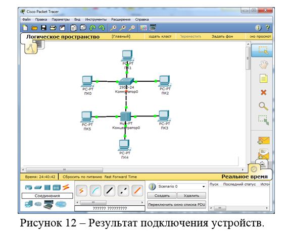
3. Далее идет самый важный этап – настройка. Так как мы используем устройства, работающие на начальных уровнях сетевой модели OSI (коммутатор на 2ом, концентратор – на 1ом), то их настраивать не надо. Необходима лишь настройка рабочих станций, а именно: IP-адреса, маски подсети.
Производим двойной щелчок по нужной рабочей станции
В открывшемся окне выбирается вкладку Рабочий стол, далее – «Настройка IP», в соответствии с рисунком 13.
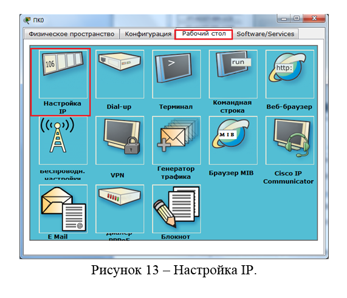
Окно настройки компьютера PC0, вкладка «Рабочий стол». Открывается окно, в соответствии с рисунком 14, где нужно ввести IP-адрес и маску. Вводим статические IP-адреса и маски
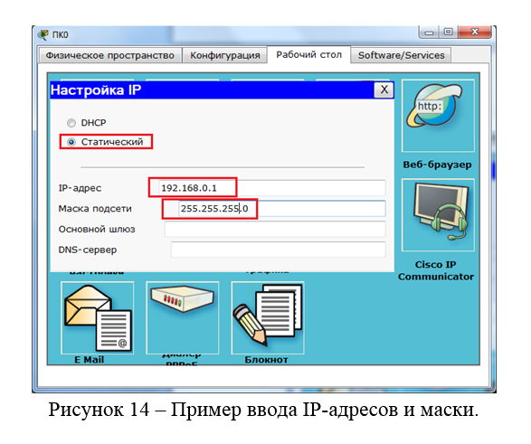
Аналогично присваиваются IP-адреса всем остальным компьютерам.
Важно! IP-адреса всех рабочих станций должны находиться в одной и той же подсети (то есть из одного диапазона), иначе процесс ping не выполнится.
Шлюз и DNS-сервер поля можно не заполнять.
4. Когда настройка завершена, выполняется ping-процесс. Например, запускается с PC5 и проверять наличие связи с PC1.
Важно! Можно произвольно выбирать, откуда запускать ping-процесс, главное, чтобы выполнялось условие: пакеты должны обязательно пересылаться через коммутатор и концентратор.
Для этого производим двойной щелчок по нужной рабочей станции, в открывшемся окне выбираем вкладку «Рабочий стол», далее – «Командная строка».
Вводим команду PC> ping 192.168.0.1
Нажимаем клавишу Enter. Если все настроено верно, то мы увидим следующую информацию, представленную на рисунке 15.
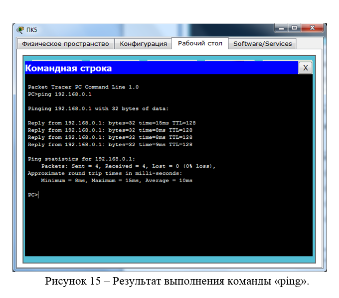
Это означает, что связь установлена, и данный участок сети работает исправно.
Порядок выполнения работы:
1. Изучить программу «Cisco Packet Tracer».
2. Получить задание у преподавателя
3. Согласно полученного варианта, рассчитать, построить и сконфигурировать компьютерную сеть с необходимой маской сети. Учесть возможность последующей масштабируемости в пределах 20% ПК. Разделить все компьютеры на 3-6 групп приблизительно поровну. Масштабируемость сети в пределах каждой группы не более 10 ПК. Установить 1 Сервер внутренней сети, на выход локальной в глобальную сеть поставить маршрутизатор. Сетевое оборудование устанавливать с учетом стоимости на построение сети. Предусмотреть в каждом коммутаторе порт для Wifi-точки доступа. Допускается создание VLAN сетей. Адреса оборудования настроить статические.
4. Оформить отчет.
Содержание отчета:
1. Титульный лист.
2. Цель работы.
3. Вариант задания.
4. Ход работы с пояснениями.
5. Полученные диапазон адресов, широковещательные адреса, адреса выделенные для wifi-точек, диапазон адресов для масштабируемой сети свести в таблицу.
6. Диаграмму сети с разбиением на VLAN.
7. Выводы по работе.
Контрольные вопросы:
1. Что такое сервер?
2. Что такое свитч?
3. Что такое мост?
4.Для чего необходим маршрутизатор?
5. Для чего необходима маска сети?
6. Какие типы соединений в сетях существуют?
7. В чем плюсы и минусы программы «Cisco Packet Tracer»?